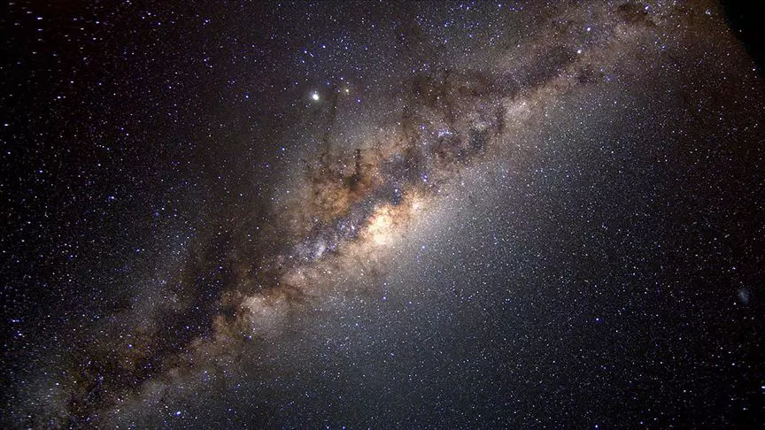

Samanyolu Nedir?
-

Samanyolu Galaksisi Hakkında Kısa Bilgiler...
Samanyolu, 13.6 milyar yaşında olan ve içinde birçok enerji, yıldız kümeleri, süpernovalar, bulutsular ve karanlık madde ile dolu bir yerdir. Batı kültüründe ise Samanyolu için Süt Yolu terimi kullanılmıştır. Bu terimin kullanılmasının nedeni ise Yunan mitolojisindeki bir mitten kaynaklanır. Eski Yunancada sütlü, süt gibi, sütsü manalarına gelen galaxias kelimesi ve süt dairesi anlamına gelen kyklos galaktikos terimi kullanılmıştır. Yunanlar gökyüzünde sadece Samanyolu dairesini gözlemlememişlerdir. Zodyak, Meridyen, Ekvator, Ufuk, Yengeç ve Oğlak dönencelerini de belirlemişlerdir.Samanyolu'nun birçok yıldızdan oluştuğunu ilk kanıtlayan kişi Galileo Galilei'dir. İtalyan bilim insanı, 1610 yılında Samanyolu'nu bir teleskopla incelemiştir. Bununla birlikte gök adanın çok sayıda yıldızdan oluştuğunu belirtmiştir. 1750'lli yıllarda ise Thomas Wright, gök adayı Güneş Sistemi'ne benzetmiş, ancak daha büyük olduğunu ve kütleçekim kuvvetinin etkisiyle birbirine bağlı pek çok yıldızdan oluşmuş bir kitle olduğunu ortaya atmıştır. 1755'te Immanuel Kant, Thomas Wright'ın araştırmalarını incelemiş ve daha da genişletmiştir. Güneş'in Samanyolu içindeki konumu ile ilgili ilk görüşler ise William Herscel'den gelmiştir. Herscel Güneş Sistemi'ni merkeze yakın bir yere yerleştirmiş ve gök adanın şeklini gösteren bir yapı hazırlamıştır.
-
öne çıkanlar
 6, 2023
6, 2023
-
yakın zamanda olanlar
-

yabancı yasam
3, 2023 -

GALAXY
1, 2023
-